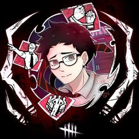

1 / 26

Ace Visconti
Type: Luck

A gambler, analyst, and survivor of the Entity, Ace Visconti pushes through every trial with the luck he brings to the table in hopes to defeat the Entity in her own game.
2 / 26
Adam Francis
Type: symbol

A leader at heart, an even braver soul in the Entity's realm. Adam Francis acts as a selfless man, in hopes to save anyone that needs the help in any form or way.
3 / 26
Ada Wong
Type:
Stealthing her way from the Resident Evil series, Ada Wong is as mysterious as you expect. She will need to use her survival skills if she plans to live against the Entity.
4 / 26
Ash Williams
Type:
From the Evil Dead series comes Ash Williams. The "lone wolf" is forced to work with our fellow survivors to have any fighting chance towards the evil the Entity has created for them.
5 / 26
Claudette Morel
Type:
The once quiet, shy girl, Claudette Morel now uses her intelligence and sheer optimism to tackle any trial the Entity throws at her.
6 / 26
Cheryl Mason
Type: Healer
Surviving her owns traumatic experiences with evil from the Silent Hill series, Cheryl Mason brings the fight to the Entity. Learning from previous fights, she plans on surviving every trial she enters.
7 / 26
David King
Type:


One person's true battle will conclude with themselves. David King has always felt misunderstood, but one thing the Entity should keep in mind is that you should always want David on your side.
8 / 26
Detective David Tapp
Type: Tracker
Detective David Tapp has always kept his moral and standards the exact same as he had them in the SAW horror movie franchise. His focus and determination to find justice, even if it sounds impossible in the realm of the Entity's, will be achieved.
9 / 26

Dwight Fairfield
Type: Tracker
Dwight Fairfield will prove to others that he is no coward. One of the original Survivors from the game's roster, Dwight will boost other people's hopes to find their courage to work together and fight back; just like he did.
10 / 26
Elodie Rakoto
Type: Tracker
Elodie Rakoto, the best person to speculate the situation around her and call out unreasonable quickly. One way or another, she will find the truth to this world sooner or later.
11 / 26
Felix Richter
Type: Tracker
Intelligence is an important factor to have when surviving against any evil. Felix Richter has exactly that, being able to solve his way through any situation under incredible pressure.
12 / 26
Feng Min
Type: Tracker

Whether that's leaving someone behind or getting the job done, Feng Min will sacrifice anything and anybody to get her objective completed.
13 / 26
Haddie Kaur
Type:
Being able to posses the power to see realms that we cannot imagine, Haddie Kaur will not fear entering these dark realms and face whatever is in them, face-to-face.
14 / 26
Jill Valentine
Type:
Jill Valentine, a founding member of S.T.A.R.S. This character who originates from Resident Evil 3 will fit right in as she also knows to not go down without a fight.
15 / 26
Jeffrey "Jeff" Johansen
Type:
Jeffrey "Jeff" Johansen is a man of simplicity. He only wants to be around nature and enjoy his art, but it's also taught him how to face his past, which he will use to tackle the darkness he'll face in the Entity.